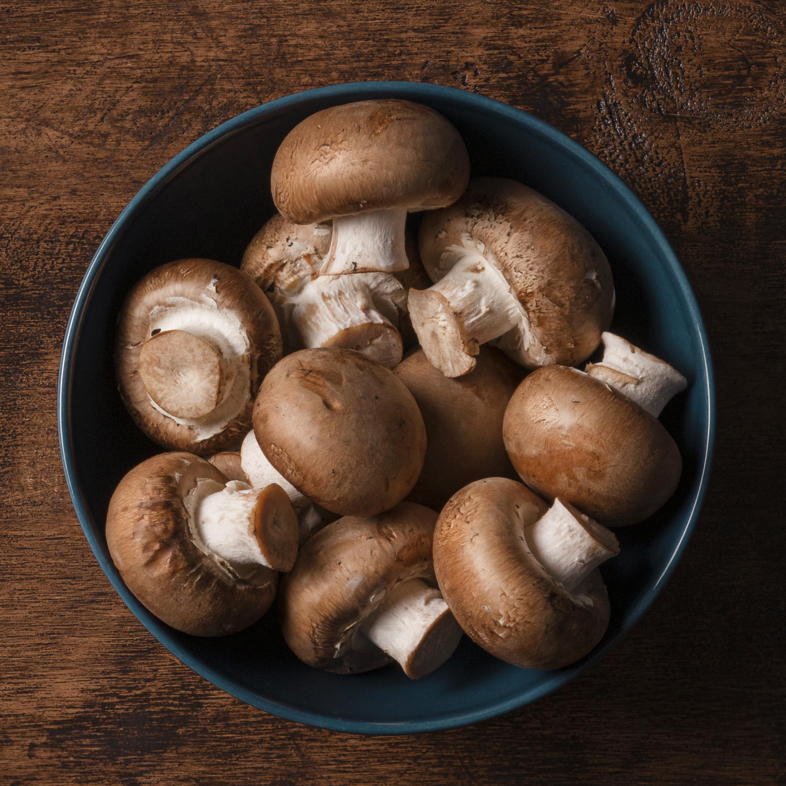

Mushroom
1. Storage

Fridge temperature: Fresh whole mushrooms can be kept for up to 10 days in the fridge. Cooked mushrooms can last for between 7 - 10 days in the fridge.

Room temperature: fresh sliced mushrooms can last for up to 7 days.
2. Characteristics
- Provides: low in calories and fat and cholesterol-free, mushrooms contain a modest amount of fiber and over a dozen minerals and vitamin
- Shouldn’t go with: shrimp, buttermilk, mustard oil
3. Recommended dish: Spinach and eggs with mushrooms


a. Ingredient
- 1 tablespoon cooking oil, avocado oil works great
- ½ lb mushrooms, sliced
- 12 ounces baby spinach
- 1 pinch sea salt and pepper
- 4 large eggs

b.Instructions
- Heat the oil in a large, non-stick frying pan over medium-high heat.
- Add the mushrooms and cook, stirring occasionally, until they start to brown, about 8 minutes. Add the spinach to the pan, working in batches if needed, and let it wilt for about 2 minutes.
- Season with salt and pepper.
- Reduce the heat to medium. Make 4 holes in the spinach and crack an egg into each hole. Cook the eggs for about 3-4 minutes, or just until the whites are set. If you prefer your egg yolks less runny, cover the pan while cooking. Serve right away.